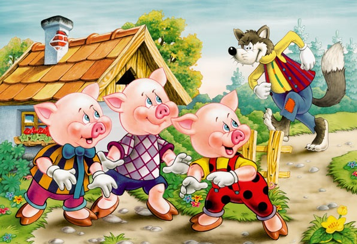
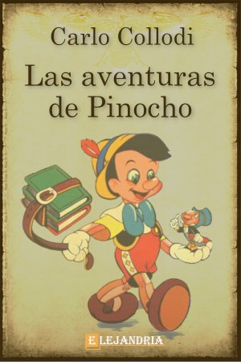
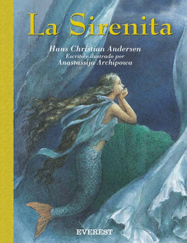
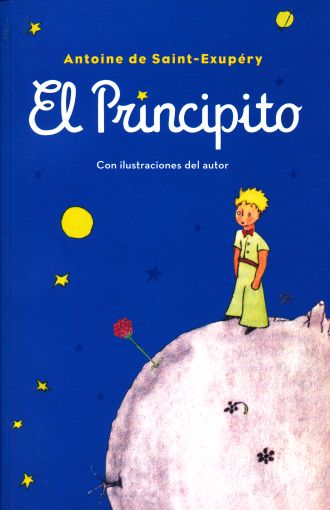
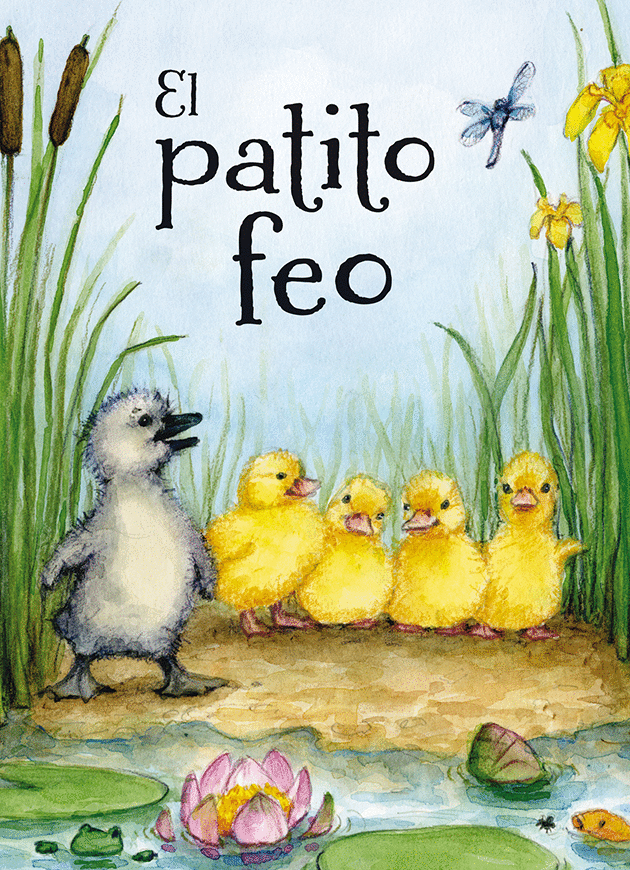

 Cuento para niños, que trata sobre 3 cerditos y un lobo que trata de comerselos
Leer "Los 3 Cerditos y el lobo" Pepe Grillo cuenta la historia de una marioneta de madera que tiene la oportunidad de convertirse en un chico real.
Leer "Las Aventuras de Pinocho" La sirena Ariel está fascinada por el mundo de los humanos, pero su padre le prohíbe relacionarse con ellos. En un viaje secreto, se enamora de un humano y recurre a una perversa hechicera para que, mediante un conjuro, su amor triunfe..
Leer "La Sirenita" En este libro, un aviador se encuentra perdido en el desierto del Sahara, después de haber tenido una avería en su avión. Entonces aparece un pequeño príncipe
Leer "El Principito" La vida del patito feo comienza cuando por error va a dar un huevo de cisne a una granja de patos, al nacer las diferencias entre sus "hermanos" es evidente, el cisne es desproporcionado respecto de los agraciados patitos, todos en la granja se burlan de él.
Leer "El Patito Feo"